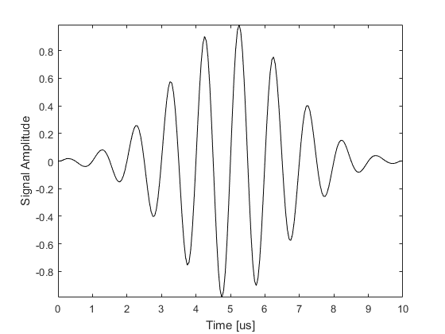
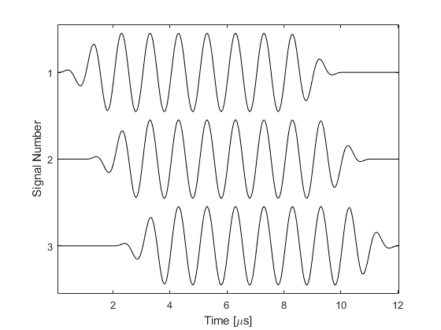

toneBurst
Create an enveloped single frequency tone burst.
Syntax
signal = toneBurst(sample_freq, signal_freq, num_cycles) signal = toneBurst(sample_freq, signal_freq, num_cycles, ...)
Description
toneBurst creates an enveloped single frequency tone burst for use in ultrasound simulations. If an array is given for the optional input 'SignalOffset', a matrix of tone bursts is created where each row corresponds to a tone burst for each value of the 'SignalOffset'. If a value for the optional input 'SignalLength' is given, the tone burst/s are zero padded to this length (in samples). Several examples are given below.
% return and plot a 1 MHz tone burst with 10 cycles and a Gaussian envelope sampled at 20 MHz
toneBurst(20e6, 1e6, 10, 'Plot', true);

% specify several signals with different temporal offsets sample_freq = 20e6; signal_freq = 1e6; num_cycles = 10; num_ring_up_cycles = 2; num_ring_down_cycles = 2; signal_offsets = [0, 20, 40]; % create signals signals = toneBurst(sample_freq, signal_freq, num_cycles, 'Envelope', [num_ring_up_cycles, num_ring_down_cycles], 'SignalOffset', signal_offsets); % plot signals figure; t_axis = (1:size(signals, 2)) / sample_freq; stackedPlot(1e6 * t_axis, signals); xlabel('Time [\mus]'); ylabel('Signal Number');
Inputs
sample_freq |
sampling frequency [Hz] |
signal_freq |
signal frequency [Hz] |
num_cycles |
number of sinusoidal oscillations |
Optional Inputs
Optional 'string', value pairs that may be used to modify the default computational settings.
| Input | Valid Settings | Default | Description |
|---|---|---|---|
'Envelope' |
'Gaussian''Rectangular'[num_ring_up_cycles, num_ring_down_cycles] |
'Gaussian' |
Envelope used to taper the tone burst. The last option generates a continuous wave signal with a cosine taper of the specified length at the beginning and end. |
'Plot' |
(Boolean scalar) | false |
Boolean controlling whether the created tone burst is plotted. | 'SignalLength' |
(integer) | 'auto' |
Signal length in number of samples. If longer than the tone burst length, the signal is appended with zeros. | 'SignalOffset' |
(integer) | 0 |
Signal offset before the tone burst starts in number of samples. |
Outputs
signal |
created tone burst |
Examples
See Also
gaussian